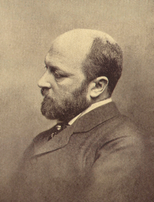

The Turn of the Screw
Henry James
Book Club October 13, 2024
“Wasn’t it just a storybook over which I had fallen a-doze and a-dream?”
Sigmund Freud presented his first ground-breaking monograph, “The Aetiology of Hysteria,” in 1896 – just a year before The Turn of the Screw was written. In this paper Freud laid out the first of his theories of the connections between false narratives, buried memories, sexual trauma and manifestations of maladies with no physical cause.

At the time Freud was virtually unknown outside Vienna. It is unlikely Henry James had any knowledge of the man or the work as he wrote his ghost story. But Freud was more than just a chronicler of the psychological turmoil of fin-de-siecle nineteenth-century Europe, he was a product of it as well; as was James – he was enveloped in the same miasma.
Freud asserted that trauma creates chains of memories, many of which are lost to the patient’s grasp, but can be retrieved link-by-link by psychoanalysis. He claimed that when the source memory of the trauma was at last dragged into the light, patients had a chance for relief from their mental distress and physical symptoms.
The Turn of the Screw lays out literary chains of text, testimony, memory, truth, falsehood, point of view, climax and resolution; but they do not link up. Whether the testimony given is evidence of trauma, mystical visitation, madness, lies or other things not dreamt of has been debated since the story’s publication. But there are no answers for the reader, no resolution to provide relief.
What is unambiguous about the story is that it is structured as a chain, a hierarchy, of narratives. The originating voice tells of of a ghost story-telling party on Christmas Eve, where a friend named Douglas hints at a story to top them all: a supposedly true tale told to him by his sister’s governess decades ago. When the guests demand that he tell, Douglas begs for a delay and takes the trouble to order up a manuscript stored under lock and key at his home. Days later the text is delivered and late that night Douglas reads the account of the governess – her encounters with the ghosts of a man and a woman (her predecessor) as she struggled with a new job caring for a young boy and his sister in an old and isolated country mansion.
James was not a psychologist, and he didn’t owe anyone any answers about what may or may not have been going on at any level. But as the first and final link in the chain, he could only take away so much if he was to leave the reader with a story. And a hierarchy is a kind of metaphor; “as above so below”, or “because this is here that is there” – its existence is a kind of illumination. What that light irreducibly reflects is the one binding kink that he could not unshackle, that he was a creator and presenter of fictions.
The narrative of the young and inexperienced governess in the manuscript read by Douglas has glaring deficiencies, both as a description of events and as a depiction of a whole and real person. It is a dance of associations and dissociations, rather than a journey of relationships. Her job application process with the master of Bly House goes marvelously well, but then he abruptly introduces a discontinuity by absenting himself from the remainder of the tale. When she arrives at the house she finds the housekeeper Mrs. Grose miraculously empathetic and trusting. The children are preternaturally good-natured and attractive. When left alone in her luxurious bedroom to unpack she catches her reflection in the full-length mirror, and remarks with some wonder that it is the first time in her life that she has seen her entire reflection. Her identity is an assemblage of fragments rather than something that feels whole.
Everything to her is at once so lovely and so strange that she muses openly whether she has fallen into some kind of fairy story; then she abruptly switches gears:
No; it was a big ugly antique but convenient house, embodying a few features of
a building still older, half-displaced and half-utilised, in which I had the
fancy of our being almost as lost as a handful of passengers in a great
drifting ship. Well, I was strangely at the helm!
Three images of her situation in one paragraph, each one suggestive of hidden layers, concealed darkness, discontinuity and isolation; and no evident awareness of how these musings hint at the fragmentation of self.
It is not surprising that the development of the narrative is consistent with its opening. The governess (and only she) sees ghosts, but gets validation from her descriptions that they must be those of real people, the former valet and governess. The actions of the ghosts hint at a traumatic backstory and a nefarious purpose, but nothing of either is revealed; rather, the obsessions with the ghosts are abruptly dropped and replaced with another focus – the question of why the boy was expelled from school.
The narrative is one of trails followed into the wilderness and then abandoned, unlinked to one another. The climax is not one of revelation, insight or even irony, but of, again, dissociation. The governess sends out of the house everyone who might have a human influence on her so that she can be isolated with the boy, but the result is simply the abrupt stoppage of both a heart and the text.
Frightening? Disturbing? Yes, but for reasons not of the plain types expected or related by the mainstream of the work’s readers and critics. The horror is rather more in the line of that which would arise from a friend digging up and casually reading a draft of a suicide note among company.
Because although the chains of narrative and character within the manuscript do not link up, the manuscript itself is a component of the hierarchy of testimony that composes the work. And following that hierarchy leads inevitably to Douglas himself.
The ways that Douglas debuts and introduces the manuscript of the governess are incongruous, in both psychological and practical terms:
Douglas seems strangely invested on an emotional level, in a manuscript he says was given to him decades ago, containing a memorialization of events that were related to him decades earlier, which took place decades more before that and did not involve him. “He had broken a thickness of ice,” the originating voice says, “the formation of many a winter; had had his reasons for a long silence.” He was “really at a loss how to qualify it. He passed his hand over his eyes, made a little wincing grimace.” More evocations of hidden layers, discontinuity and isolation, of unaddressed hysterical complexes and buried emotions.
He makes a flourish of having the manuscript retrieved from his home, that task and his buildup to the reading event take the better part of a week.
Practical matters appear in retrospect: Douglas says “She had never told any one. It wasn’t simply that she said so, but that I knew she hadn’t. I was sure; I could see.” But how could such a story be kept under wraps? How could the story of a young boy dying suddenly in the arms of his governess, after she had taken pains to be alone with him, be elided from news and rumor, and even her personal history? After all, Douglas said that she was governess to his younger sister. How could she get another such job with that episode in her background? Especially since it was preceded by months of the governess confiding with the housekeeper detailed stories of encounters with ghosts.
Wouldn’t references surely have been checked? In Victorian England evidence of madness or mental illness was not a thing to be taken lightly (let alone homicide), and hardly something to be invited into a family home. This is characteristic of a fabrication. The teller concocts a rationalization for evident problems with the story, only to create more implausibilities which are never accounted for.
On the most basic level of practicality, Douglas says the manuscript is in his possession because “she sent me the pages in question before she died.” But when these “pages” at last arrive, they are in the form of an “old-fashioned gilt-edged album” with a “faded red cover.” At the time of the tale’s supposed writing, writing paper itself was something of a luxury. But a bound volume of gilt-edge blank sheets? That would seem to be well out of the range of a governess’s wage. But it is a thing that an older bachelor Cambridge alumnus living in London might easily obtain.
The weight of these various considerations suggests that the tale is a contrivance and an indulgence authored by Douglas himself, a product of psychological stresses within him that he does not understand, in an ineffectual attempt to address and treat traumas whose meanings and recollections are submerged – as is consciousness of their impact on him. The horror of the story is the evidence of Douglas’s need to unburden himself of his traumas in a public and dramatic way once the chance presented itself to him, and the induction suggested by the hierarchy of narrative that his acting out resolved nothing, leaving him as well as the reader hanging. It is in the nature of hysteria that an attempt by the sufferer to self-treat simply buries the secrets deeper and makes the suffering worse. It amounts in the end to another turn of the screw.
Freud the scientist witnessed the cycles of suffering, self-delusion and mental dissonance of his patients, and claimed a breakthrough in identifying and treating their traumas. He explicitly described the complexes of memory and association he uncovered as nodes in a hierarchy. Henry James the writer was passive by contrast, an oracle offering only a reflection to the supplicant.
Which approach was more effective? Or rather, less a waste of time? The millennial anxiety of the era could not be arrested or diverted, and the only certainty was that the future would embody a discontinuity. Disaster lay ahead. But can the chains of memory and association be broken, or are the discontinuities integrated into a structure of higher dimension, a fractal? That is to say apropos Freud and James, who was the hack and who the prophet?